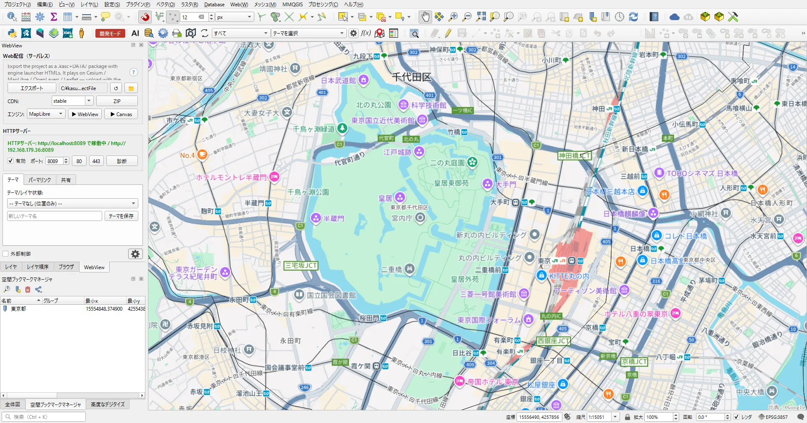
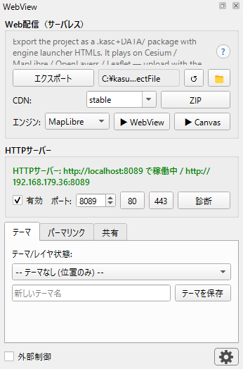

導入ガイド
クイックスタート
1. インストール
# QGIS プラグインディレクトリに配置
# Windows: %APPDATA%\QGIS\QGIS3\profiles\default\python\plugins\geo_webview
# macOS: ~/Library/Application Support/QGIS/QGIS3/profiles/default/python/plugins/geo_webview
# Linux: ~/.local/share/QGIS/QGIS3/profiles/default/python/plugins/geo_webviewまたは QGIS プラグインマネージャーからインストール可能です。
2. 基本的な使い方（サーバレス配信）
- QGIS でプロジェクト（.qgs/.qgz）を開く
- メニューから「Web > geo_webview」を選択してパネルを表示
Engine:でエンジンを選び▶ Open— エクスポート→登録→ブラウザ起動まで実行される- 配布したい場合は
Exportで出力したフォルダをエンジン（web/）と一緒に静的ホストへアップ

サーバレス配信の流れ
1. エクスポート／起動
パネル最上段の「Web Distribution」グループで操作します （3行構成: 保存行（Export＋保存先＋📁）、CDN行（CDN選択＋ZIP）、 起動行（Engine選択＋▶WebView＋▶Canvas））。 各ボタン・コンボの詳細は 主な機能 章を参照してください。

2. 出力物
<out_dir>/ # KASUGAI 登録済みなら <install>/QGIS_projects/<プロジェクト名>/
├─ kasugai_canvas.kasc # レイヤツリー・参照行・cam:/theme:/bookmark: 等
├─ index.html # 起動ページへのリンク一覧＋ZIPダウンロードリンク
├─ cesium.html / maplibre.html / openlayers.html / leaflet.html / gsimaps.html # 起動ページ
├─ project.json # {"title": ...}
├─ bookmarks.xml # QGIS ブックマーク（emit_bookmarks 時）
└─ canvas_data/ # GeoJSON(4326) / ネイティブ形式複製 / .qml / タイル等.kasc 行の生成規則の詳細は 「1. Web タブ」の設定・ツール仕様
を参照（GPKG/GeoJSON/ GeoParquet/FlatGeobuf はネイティブ参照、CSV/TSV は
duckdb:、 フィルタ付きは where=、3D Tiles は
3dtiles:、XYZ 最下段は base:、 WMS ラスタは
wms: 行、その他ベクターは GeoJSON 化）。